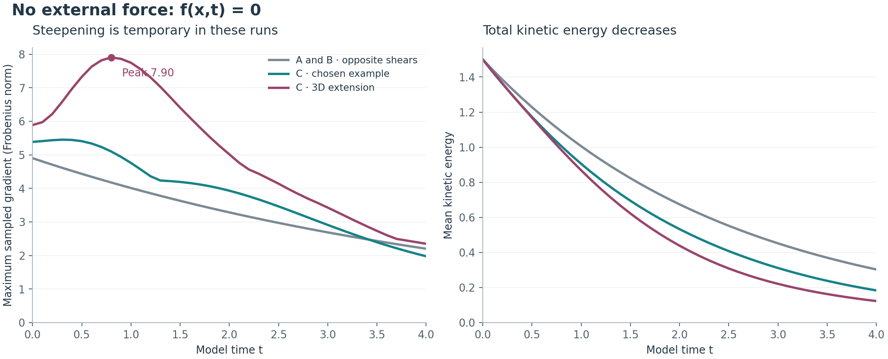

A separate example steepens, then settles.
Scope correction: these seven runs calculate how trigonometric velocity fields chosen by the assistant change over time. The original Stokes ring, its smooth replacement, and your A/B/C conversation idea were not tested by these calculations.
The original C has an analytic smoothness argument. Its three-dimensional continuation developed a temporary increase in gradients, then relaxed in the completed runs.
Pressure and viscosity are included. The 3D variation changes only the starting velocity. No smooth external-force variant was used.

What was run
| Field | Grid | Time step | Start gradient | Peak gradient | End gradient | End energy |
|---|---|---|---|---|---|---|
| A | 16³ | 0.02 | 4.898979 | 4.898979 | 2.201253 | 0.302844777 |
| B | 16³ | 0.02 | 4.898979 | 4.898979 | 2.201253 | 0.302844777 |
| C | 32³ | 0.01 | 5.385165 | 5.451225 | 1.977085 | 0.183312199 |
| C3D | 32³ | 0.02 | 5.887841 | 7.732045 | 2.348184 | 0.122669852 |
| C3D | 32³ | 0.01 | 5.887841 | 7.732044 | 2.348184 | 0.122669851 |
| C3D | 48³ | 0.01 | 5.887841 | 7.882796 | 2.348545 | 0.122667914 |
| C3D | 64³ | 0.01 | 5.887841 | 7.903966 | 2.348882 | 0.122667944 |
Checks on the result
- All fields start smooth and divergence-free, with the same mean kinetic energy of 1.5 and the same zero coarse view.
- Halving the time step changes the final field by 0.00000623%.
- The 32³/48³ difference of 0.1053% triggered the additional 64³ run. The 48³/64³ difference is 0.002762%.
- The finest run has RMS divergence below 4.695e-17 and an energy-balance error below 1.492e-09 at recorded times.
- Ten new numerical checks passed. Earlier independent runs were reused.
Why the original C stays smooth
Although it has three velocity components, C does not vary with z. Its horizontal part is an explicitly decaying shear:
(u₁,u₂) = exp(−5νt) cos(2x+y) (1,−2) ∂ₜw + exp(−5νt) cos(2x+y)(∂ₓw − 2∂ᵧw) = ν(∂ₓₓw + ∂ᵧᵧw) w(x,y,0) = cos(2x) ‖∇w(t)‖∞ ≤ 2 exp((1 − exp(−5νt))/ν)
The coefficient is smooth and the displayed gradient bound stays finite. Linear diffusion gives smooth higher derivatives on finite time intervals. This particular C therefore cannot provide a breakdown example.
Initial fields and method
A = (0, √6 cos(2x), 0) B = −A C = (cos(2x+y), −2cos(2x+y), cos(2x)) D = (cos(2z), cos(2x), cos(2y)) C₃D = √(3/(3+1.5ε²)) (C + εD), ε = 0.5
The names identify constructed fluid fields. They are illustrative choices motivated by the discussion. The new D term belongs to the initial data; it is not applied as a force during evolution.
Fourier differentiation, strict 2/3 truncation, pressure projection at every stage, and fourth-order Runge–Kutta. The coarse view retains |k| ≤ 1; the actual evolution retains many more modes. Gradients are Frobenius norms sampled on the grid every 0.1 model time units.
What this establishes
The original C remains smooth by its explicit reduction. For the 3D extension, the refined numerical runs show temporary steepening followed by relaxation through time 4. This finite experiment supplies no general smoothness or breakdown proof for the Clay problem.
Full saved numerical record · Official Clay equation
These results are saved locally. This page does not assert that they have been published to GitHub.